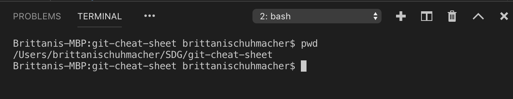

Git-r Done!
A quick reference guide for Git commands
- Git init
- Creates a new repository named for the directory you are currenly in.
- Git add .
- It's like creating a Word document.
- The . means everything in that folder
- Git commit -m "commit message"
- This is similar to saving your Word document.
- The commit message allows you to see what changes you made.
- Git commit -a
- Commit any files added with git add and also commit any files you've changed since
- Git push
- This is like emailing your Word document.
- Git Status
- Shows the working tree status.
- Git Log
- The is will show the commit logs.
Branches
- Git checkout -b < "branchname" >
- Creates a branch, which will allow you to work on a project without affecting the head or the main projects.
- Git branch
- + -m < oldbranch > will be renamed to < newbranch >
- + -c < oldbranch > will be copied to a new name < newbranch >
- + -d < branchname > will delete the named branch
- Git checkout < branchname >
- Allows you to switch from one branch to another
- >
- Allows you to switch from one branch to another
Common Terminal Commands
- ls
- Allows you to see the diretories.
- cd
- Allows you to change the directores.
- cd ..
- Allows you to back up one directory
- mkdir < name of new directory
- Used to create a new directory.
- pwd
- Allows you to view the directory you're currently in.
